Decision Trees
Overview
Decision trees provide a clear and interpretable representation of the classification process. The rules learned by the decision tree algorithm can be easily understood by humans, making it easier to interpret why certain decisions are made.
This algorithm is capable of capturing nonlinear relationships between features and the target variable. In text classification, where the relationship between words or phrases and class labels may be complex and nonlinear, decision trees can effectively model these relationships. Decision trees do not make any assumptions about the distribution of the data, making them suitable for a wide range of text classification tasks. They can handle both numerical and categorical features, making them versatile for text data with different types of features.
In addition to that, it provides a measure of feature importance, which indicates the relevance of each feature in the classification process. This can be useful for feature selection and understanding which words or phrases are most predictive of certain class labels in text classification tasks.
Decision trees can handle missing values in the data without the need for imputation techniques. In text classification, where some documents may have missing or incomplete text data, decision trees can still make accurate predictions by effectively handling missing values.
They are relatively efficient and can handle large datasets with moderate computational resources. In text classification tasks with a large number of documents or features, decision trees can provide a scalable solution for classification.
Last but not the least, decision trees are robust to irrelevant features in the data. They can automatically select the most relevant features for classification, ignoring irrelevant features that may not contribute to the predictive power of the model. In text classification, where the presence of irrelevant words or phrases is common, this can help improve the efficiency and effectiveness of the classification process.
Data Prep
To split data into training and testing sets without any overlap, you can use the train_test_split function from the scikit-learn library in Python. It internally handles choosing datapoints without replacement, making sure that there are no common data points between training and testing set.
Naive Bayes in python requires all the features to be in numeric form. Here is the sample input dataset:

Link to the data
Applying train test split divide the data and labels into training and testing sets.
X_train

X_test

Y_train and Y_test

Code
Here is the code to implement Decision Tree algorithm.
Results
Let's take a look at different trees and their structures as a result of implementing this algorithm on our dataset.
Tree 1
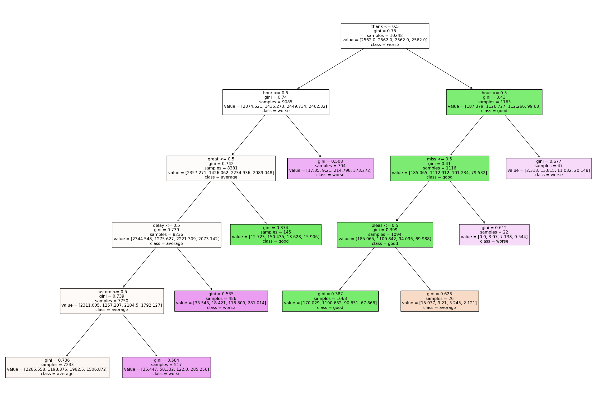Tree 2
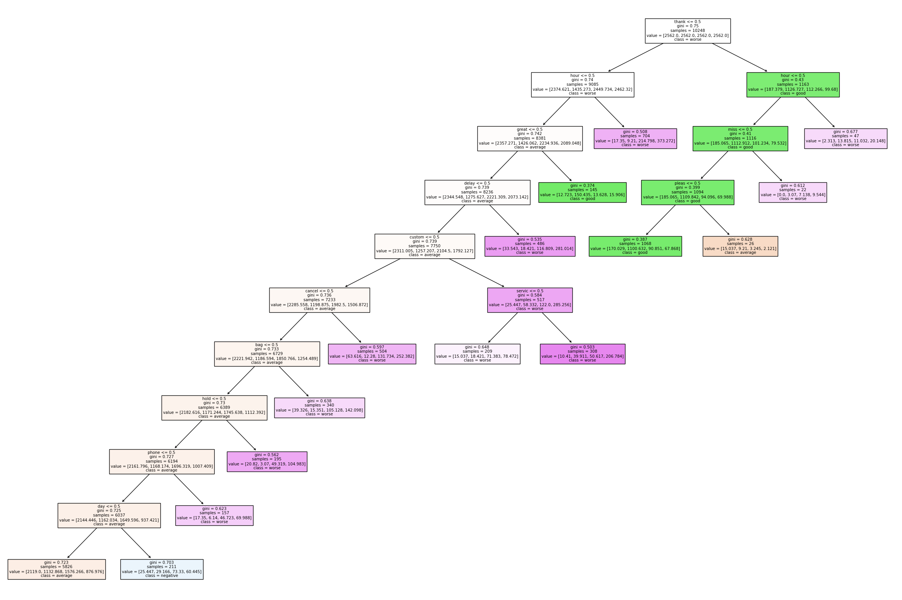Tree 3
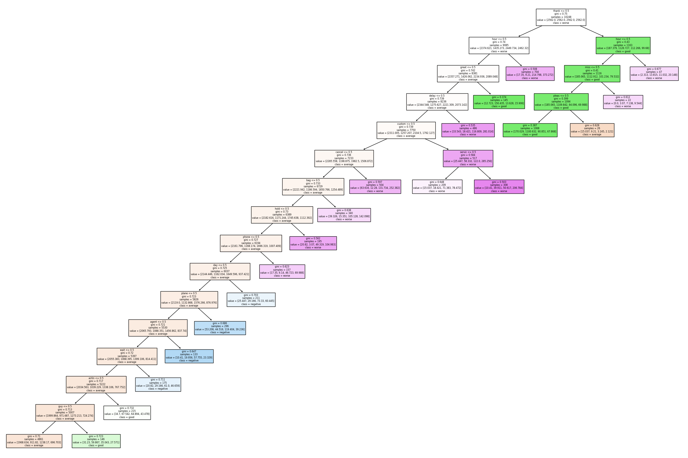Tree 4
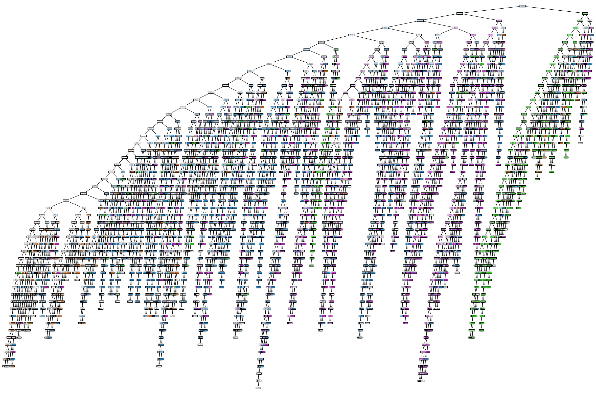Let's take a look at the classification metrics for these trees
Tree 1
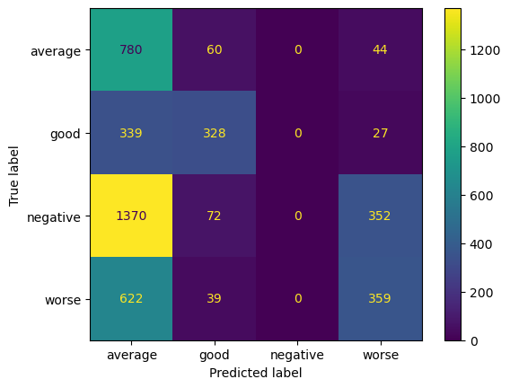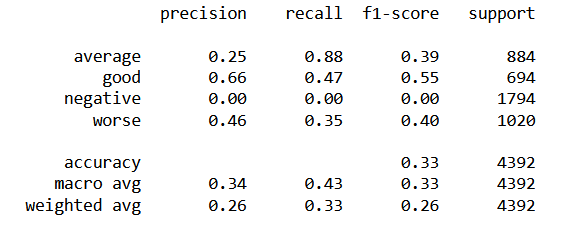
Tree 2
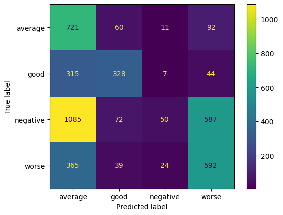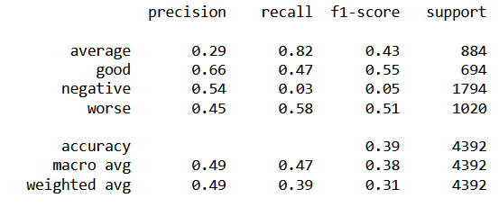
Tree 3
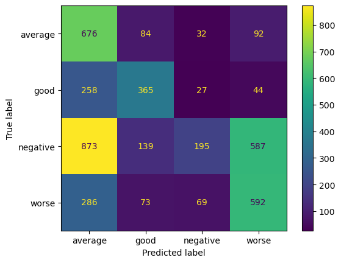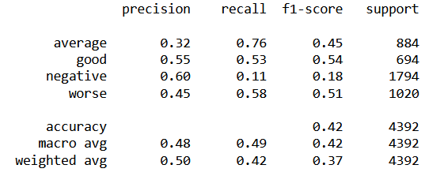
Tree 4
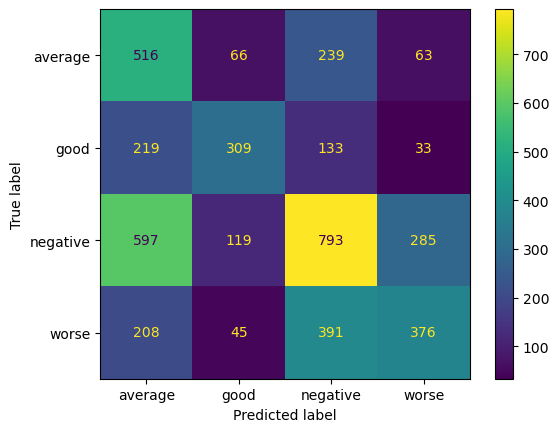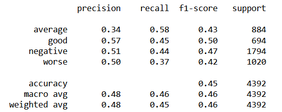
Conclusion
Starting from tree1 till tree4, the complexity of the tree increased, which was in conjunction to the improvement in classification metrics for the four trees one after the other.
The first three trees are biased and underfit the data. Tree4 did a better job in learning the complexity of the feature interations and it was reflected in the classification scores.
Since Decision trees do not assume feature independence, it could learn and uncover complex relationships between features, and as a result of that, it gave better results than naive bayes.